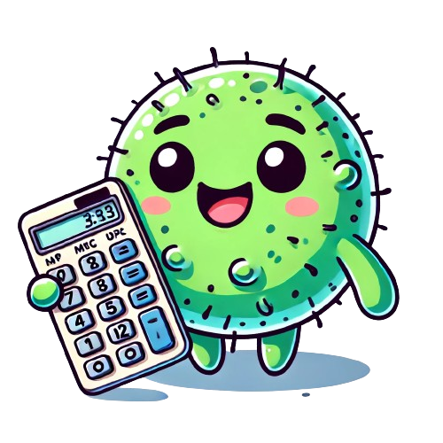

How To Use?
Just click on "Select Files" and select the files you want to process.
Then click on "Process" and wait for the files to be processed.
Then you can view and download the processed files.